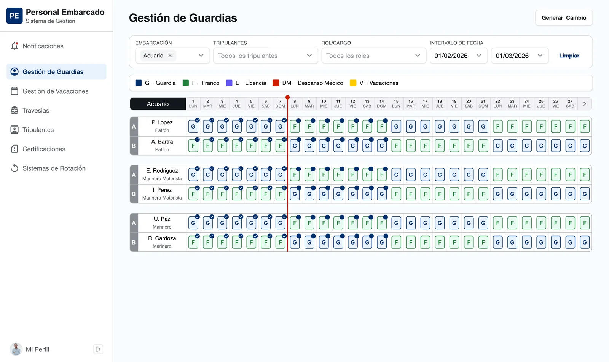
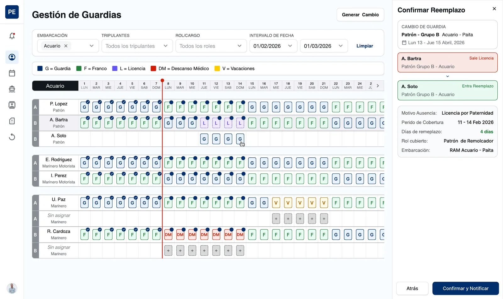
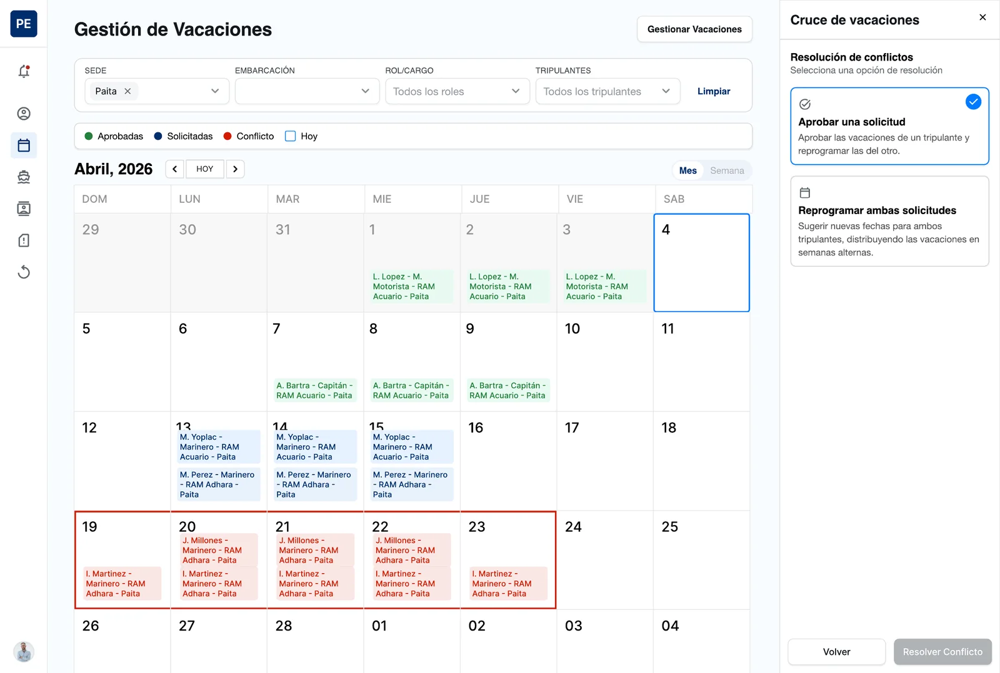
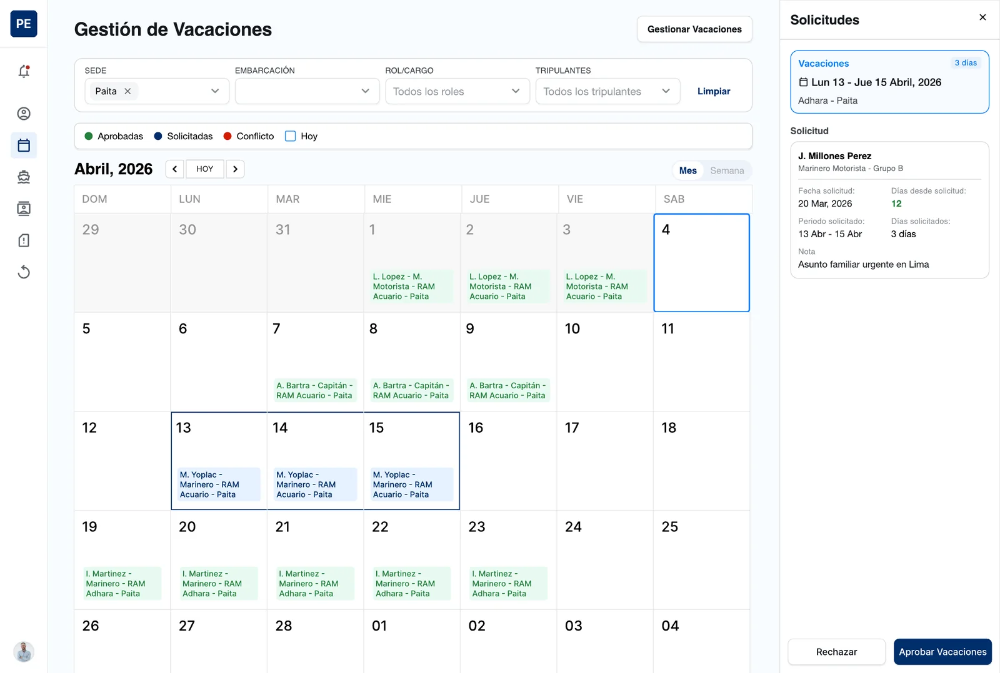
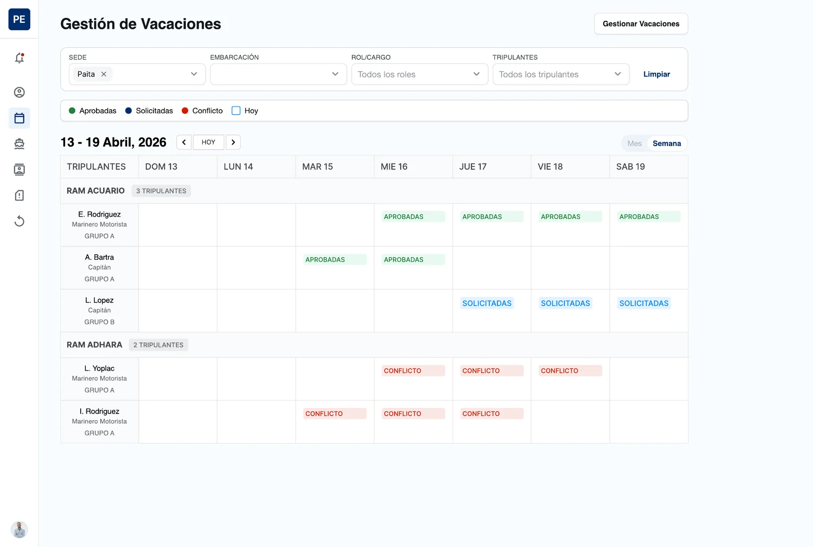
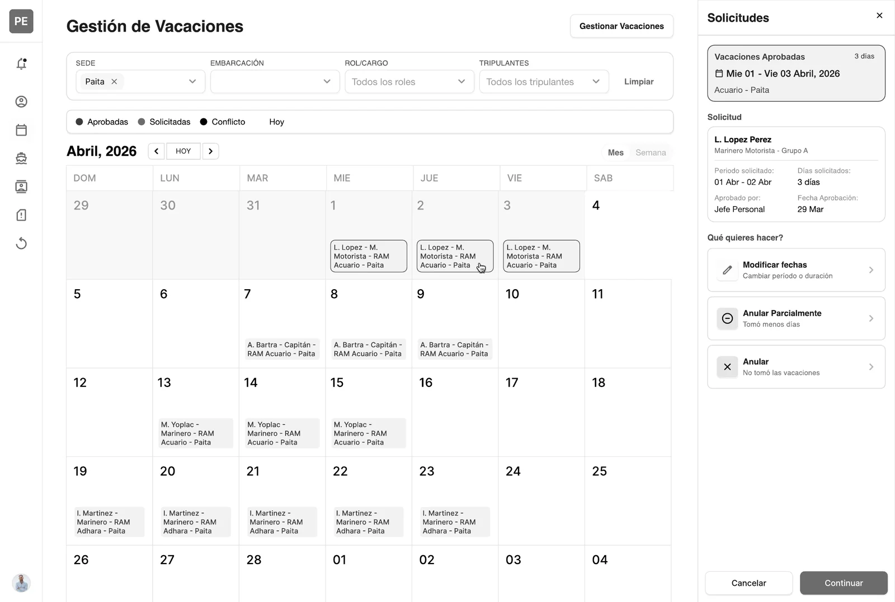

Crew Scheduling · Web app · 2026Gestión de personal · App web · 2026
Personal Embarcado
A web system to plan crew watches, cover absences and resolve vacation conflicts for the fleet of a port services company in Peru. Un sistema web para planificar guardias, cubrir ausencias y resolver cruces de vacaciones del personal embarcado de una empresa de servicios portuarios en Perú.

- The problemEl problema
- Knowing who is on board, who is off and who covers an absence depended on many separate processes, with the risk of leaving vessels short-staffed.Saber quién está a bordo, quién está de franco y quién cubre una ausencia dependía de muchos procesos separados, con el riesgo de dejar embarcaciones sin personal.
- What I didQué hice
- Designed the admin side of the system (watch management and vacation management) from flows to a high-fidelity Figma prototype, reviewed weekly with the client.Diseñé el módulo de administración del sistema (gestión de guardias y de vacaciones) desde los flujos hasta un prototipo de alta fidelidad en Figma, revisado semanalmente con el cliente.
- The resultEl resultado
- Flows validated with real users before development, and a product that was implemented and went live.Flujos validados con usuarios reales antes del desarrollo y un producto que se implementó y salió en vivo.
- RoleRol
- Freelance UX/UI Designer (through a consultancy)UX/UI Designer freelance (a través de una consultora)
- DurationDuración
- ~3 months~3 meses
- ClientCliente
- A port services company in PeruUna empresa de servicios portuarios en Perú
- MethodologyMetodología
- Design Thinking
- ToolsHerramientas
- Figma
The contextEl contexto
One place to plan crews, instead of many disconnected processesUn solo lugar para planificar tripulaciones, en lugar de muchos procesos desconectados
The goals: centralize all crew information, optimize watch and voyage assignments, keep digital traceability of boarding, and manage vacations, leave and substitutions with clear approval flows.Los objetivos: centralizar toda la información del personal, optimizar la asignación de guardias y travesías, mantener la trazabilidad digital del embarque y gestionar vacaciones, licencias y reemplazos con flujos de aprobación claros.
One system for all embarked staff; this case study covers the highlighted admin side: Watch Management and Vacation ManagementUn solo sistema para todo el personal embarcado; este caso cubre el módulo de administración resaltado: Gestión de Guardias y Gestión de Vacaciones
The three user groups and how they connectLos tres grupos de usuarios y cómo se conectan
How I designed itCómo lo diseñé
Weekly reviews with the client, and real users before any codeRevisiones semanales con el cliente y usuarios reales antes de escribir código
- EmpathizeEmpatizarStakeholder calls on how watches, absences and vacations were handledLlamadas con stakeholders sobre cómo se manejaban guardias, ausencias y vacaciones
- DefineDefinirFunctional analysis; scope split into modules, admin side firstAnálisis funcional; alcance en módulos, primero la administración
- Ideate & prototypeIdear y prototiparQuick workshops, UI design and an interactive Figma prototypeWorkshops rápidos, diseño UI y prototipo interactivo en Figma
- TestTestearReal-user validation and formal acceptance before developmentValidación con usuarios reales y aceptación formal antes del desarrollo
About 3 months, one review every weekUnos 3 meses, una revisión cada semana
Watch managementGestión de guardias
Covering an absence became a guided, four-step taskCubrir una ausencia se volvió una tarea guiada de cuatro pasos
The roster legend: one month per vessel and crew group (A/B), filtered by vessel, crew member, role and dates, with two vessels side by sideLa leyenda del cuadrante: un mes por embarcación y grupo (A/B), con filtros por embarcación, tripulante, cargo y fechas, y dos embarcaciones lado a lado
- Spot the gapDetectar el huecoAn empty “Unassigned” row appears under the absent crew memberAparece una fila “Sin asignar” bajo el tripulante ausente
- Select staffSeleccionar personalCards with experience, base, certificates and availabilityTarjetas con experiencia, sede, certificados y disponibilidad
- Confirm the replacementConfirmar el reemplazoWho leaves, who enters, reason, period, days, role and vesselQuién sale, quién entra, motivo, periodo, días, rol y embarcación
- Confirm & notifyConfirmar y notificarThe roster updates and both crew members are notifiedEl cuadrante se actualiza y se avisa a ambos tripulantes
Covering an absence in four stepsCubrir una ausencia en cuatro pasos

Vacation managementGestión de vacaciones
Conflicts are flagged on the calendar and solved in the same placeLos cruces se marcan en el calendario y se resuelven en el mismo lugar
- Conflict flaggedCruce marcadoTwo crew members in the same role overlapDos tripulantes del mismo cargo se superponen
- Choose a resolutionElegir una soluciónApprove one request or reschedule bothAprobar una solicitud o reprogramar ambas
- Review the summaryRevisar el resumenWith suggested new datesCon fechas sugeridas
- ApplyAplicar
Every vacation on the monthly calendar has one of three states; a conflict is solved in four stepsCada vacación del calendario mensual tiene uno de tres estados; un cruce se resuelve en cuatro pasos

Requests are approved or rejected with a reason from a side panel, and a weekly view by vessel makes overlaps on the same boat stand out.Las solicitudes se aprueban o rechazan con un motivo desde un panel lateral, y una vista semanal por embarcación hace que los cruces en un mismo barco salten a la vista.


Changes to approved vacationsCambios sobre vacaciones aprobadas
Plans change after approval, so the system lets them change safelyLos planes cambian después de aprobarse, así que el sistema permite cambiarlos con seguridad

What it provesQué demuestra
Dense operational data can still feel calm and clearLos datos operativos densos también pueden sentirse claros y tranquilos
- A consistent legend and color system make a full month of watches readable at a glance.Una leyenda y un sistema de color consistentes hacen legible de un vistazo todo un mes de guardias.
- Side panels keep the context visible while the admin makes a decision.Los paneles laterales mantienen el contexto visible mientras el admin toma una decisión.
- Validating with real users before development reduces rework once the build starts.Validar con usuarios reales antes del desarrollo reduce el retrabajo cuando empieza la construcción.
Next projectSiguiente proyecto
Work Connect
Read the case studyLeer el caso de estudio← Previous projectProyecto anterior · All projectsTodos los proyectos
Contact MeContáctame
Let's explore the exciting project you'd like to dive into!¡Hablemos del proyecto que tienes en mente y hagámoslo realidad!